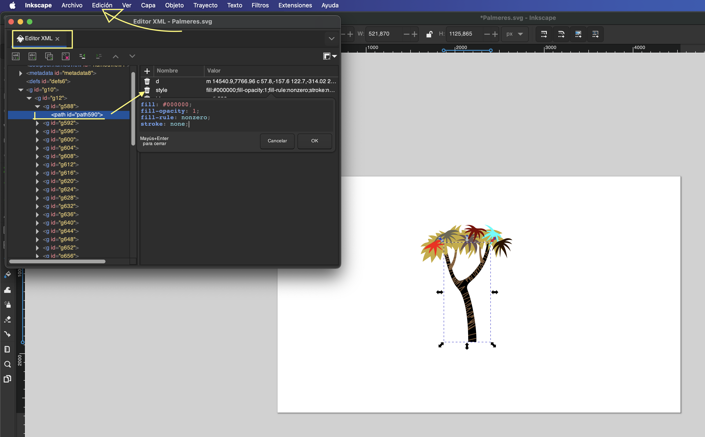

Primero lo que he tenido que hacer es simplemente eliminarl las otras palmeras que tenia la iamgen por defecto y quedartme con la que quiero. Para hacelo solo he tenido que seleccionar las otras palmeras y eliminar las imagenes que no queria.
3. Change the colors
Para cambiar el color solo tienes que seleecionar la forma que quieras,despues abajo tiene una paleta de colores para seleciconal el color que quieras.
3.2
Para hacerlo tenemos que ir a edit seleccionar editor XML, seleccionamos path id que queremos en mi caso el trocno, nos abrira un submenu que en el apartado de style podemos cambiar el color

4. Save the resulting images and attach them to your website.